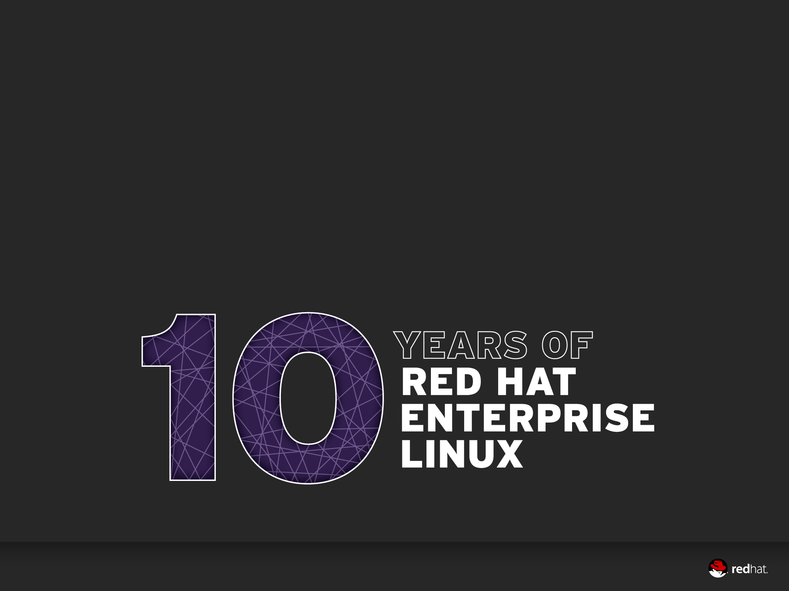
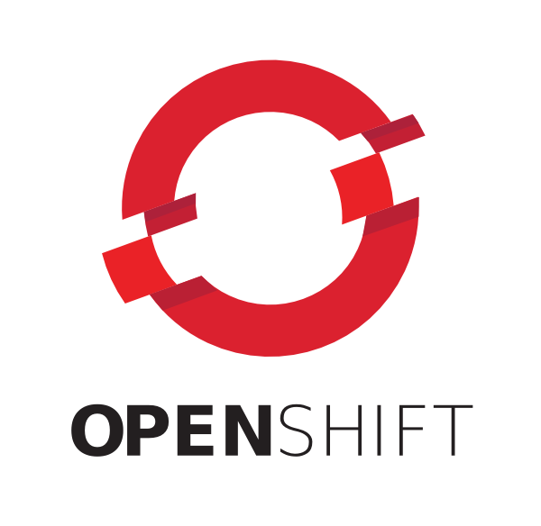

Linux: A Platform for Innovation
LINUXCON EUROPE 2012
Barcelona
Brian Stevens, CTO Red Hat, @addvin
20 years of disruption
Customer value drove adoption
Phase 1 of consumerization of IT
100x performance wins over Solaris/SPARC
Open IT
Consumerization of IT
IT, let me introduce you to...
Let's Talk Performance
100x Performance Wins over...
Solaris / SPARC
The Red Hat Linux Model
Develop: invest in the advancement of Linux
Enablement: hardware capability to reach our customers quickly
Model: fast upstream development, hardened into enterprise releases
Ecosystem: it isn't about Linux, but rather the ecosystem
Boring: enable hardware upgrades without churning the app stack
Red Hat Lifecycle
Shadowman Update
Reached $1.1B in FY12
Is Open Source a Business Model?
No
But it is the best DEVELOPMENT model on the planet
Enables collaboration
Modular innovation which customers can consume incrementally
Open Source is Defining the Future of IT Architecture
Hadoop
Rails
MongoDB
Git
Cassandra
OpenStack
What do each of these have in common with Linux?
They are all examples of next gen IT solutions
They are all open source
They were started by end users and developers, not product companies
Where would the cloud be w/o Linux?
No Amazon
No Google
No Yahoo!
No Rackspace
No Salesforce
No LinkedIn
No Pandora
No Twitter
No Facebook
No matter how you define your cloud
IaaS
PaaS
SaaS
Linux brings your application to ALL platforms
Raw hardware
HV: KVM, Hyper-V, and ESX
The cloud
RHEL and the cloud
To help our customers get to the cloud ...
we certify clouds.
17 today
Trust them just like you trust 3000+ certified hardware models
Linux is the heart of PaaS
Developers should be writing code
Without worrying about deployment and infrastructure
To help them we started openshift
Develop in Java, Ruby, P*, Node.js
Use GIT, Eclipse, or a Web IDE
Application stacks from Linux
Security from SELINUX
QoS from CGROUPS
Namespace from LXC
100,000 + Active Applications
OpenShiftLinux is the bridge to IaaS
OpenStack
Turns Linux Servers into scale-out IaaS
Community Developed
Open Governance
Private Cloud.
or run a Service Provider.
Red Hat Commitments
#2 Developer of Folsom
Platinum Sponsor of Foundation
Enterprise OpenStack product in 2013
Meanwhile, get started here
Linux is the bridge to Storage and Data
Hardened as the filesystem under Oracle
But that was 10 years ago
80% of new data does not sit inside a SQL database
Now ...
Today's data is different than 10 years ago
It is music
video
log files
documents
machine and sensor generated
It is only semi-structured
It is typically flat files
And the amount we need to store is doubling every 3 years
It is no longer sufficient to store it on one highly available server
We need to scale it across servers
For both availability and scale
And we need to keep it on-prem and in the cloud
Its why the new era is linux-based, and looks like:
Gluster
Hadoop
Mongo
Unwrapping storage s/w from the tin = Gluster
Scale across servers
On-premise or cloud
Optimized for Big Data
Standard file server protocols
Openstack and S3 compatible i/f
KVM and ESX image repository
Secure, isolated app containers
Today's network is static and inflexible
Linux is the evolution of the network
The network needs to be agile
We can put our applications anywhere, anytime
We can put our data anywhere, anytime
The network needs to respond to the needs of the business
Connectivity between applications and data
In the cloud and on-premise
Securely
Defined-on-demand
KVM and Linux have a head start
oVswitch
OpenStack and Quantum
Emerging s/w network controllers
Thank you
This presentation running on OpenShift
Developed in HTML5 with reveal.js
Brian Stevens, @addvin

Attributions
IT introduction - http://www.flickr.com/photos/alville/4513533483/
Twitter - http://www.flickr.com/photos/rosauraochoa/3419823308
Performance - http://www.flickr.com/photos/piers_cumming/4709826342
Rowboat - http://www.flickr.com/photos/rootology/2769416959
Transitions:
Cube -
Page -
Concave -
Zoom -
Linear -
None -
Default
Themes:
Sky -
Beige -
Simple -
Serif -
Default
Export to PDF